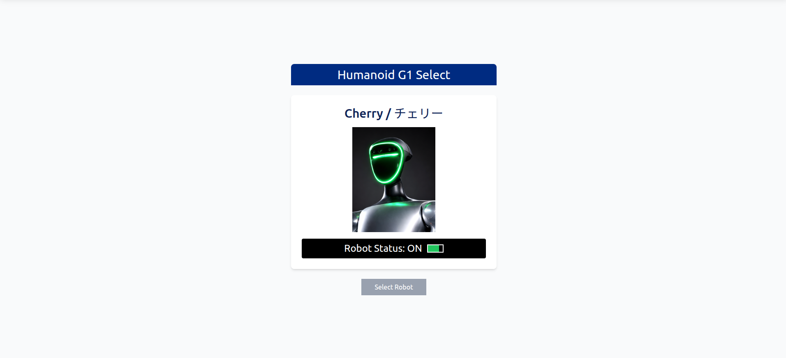
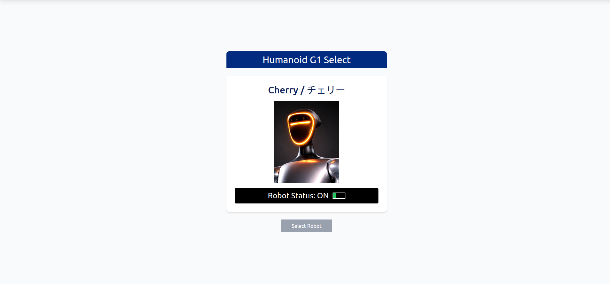
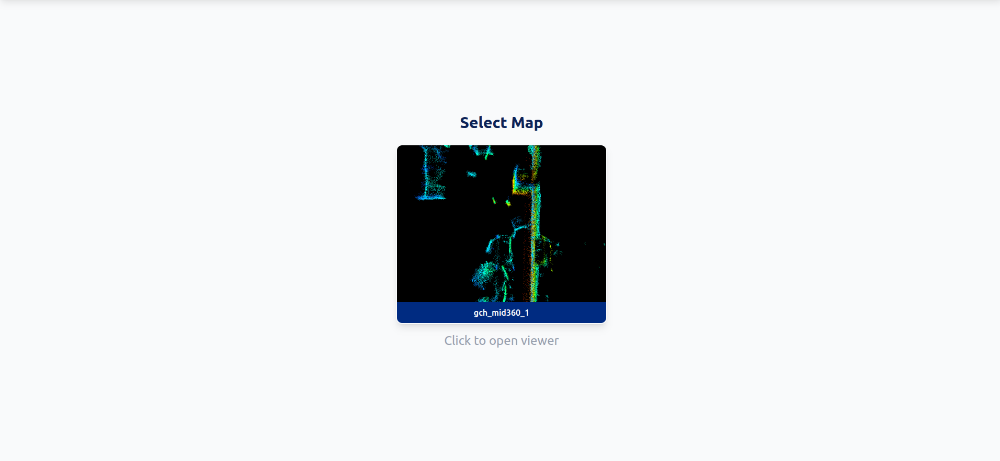
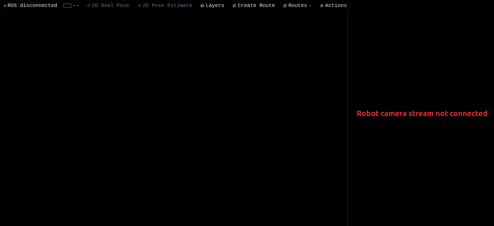
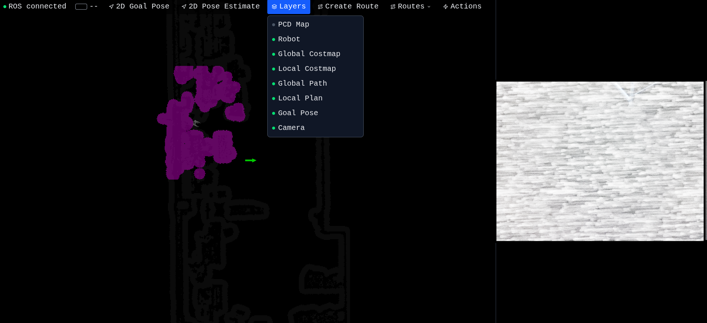
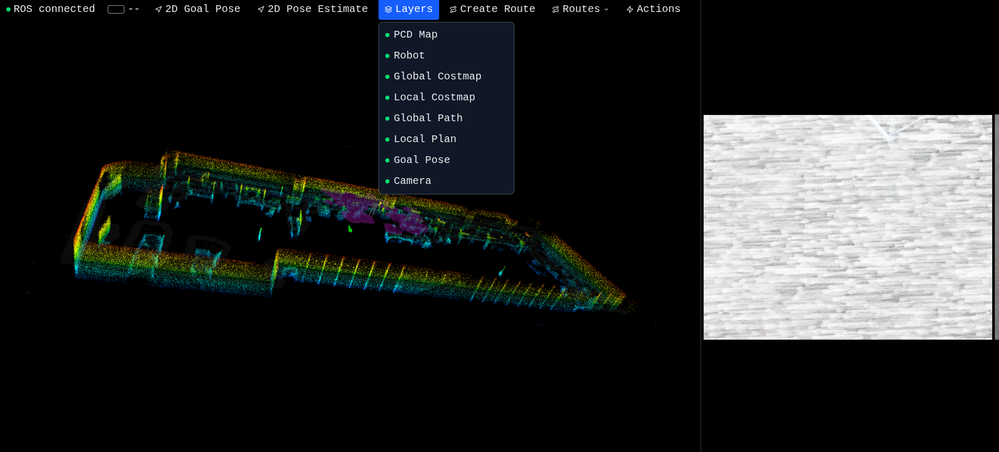

When I started this project, I had a Unitree G1 humanoid robot, a Livox MID360 LiDAR, and a goal: control the entire thing from a web browser. No RViz, no ROS native tooling — just open a browser tab and you have a full operator console for a humanoid robot. Live map. Live camera. Click-to-navigate. Live point cloud. All of it.
This is Part 1, where I cover the foundation: getting the robot localized, getting it talking to the browser, and turning a passive 3D viewer into a live operator console. Part 2 covers the automation layer — programmable routes, robot actions, and object detection. Part 3 is the robot-side deep dive.
Important upfront: I built every layer of this from scratch. The web UI, the FastAPI backend, the FAST-LIO localization stack on the robot, the move_base navigation tuning, the Unitree SDK action controllers, even the cmd_vel bridge between move_base and the robot's leg controllers. There is no off-the-shelf "G1 web controller" — this is hand-rolled end to end.
What it looks like

Robot powered on, web app idle (initial screen)
That's the starting screen. The robot is powered up and reachable on the network, but the web app hasn't connected to anything yet — just the robot card waiting for a click.

Robot is on but not in walk mode — the FSM state is surfaced clearly
This second view is what you see when the robot is up and reachable, but not yet in walk mode. The G1 has multiple FSM states (sit, stand, walk, run), and walking has to be explicitly enabled before any navigation works. The UI surfaces this clearly so you don't end up wondering why your nav goals are being ignored.
The stack
Browser (React + Three.js)
│
├── HTTP → FastAPI backend (serves PCD, costmaps, routes, static files)
│
└── WebSocket → rosbridge_server → ROS on the robot
│
├── FAST-LIO + Open3D localization
├── move_base (DWA local planner)
├── Custom Unitree SDK action controllers
└── Realsense cameraFrontend: React 19 + Vite + TypeScript + Three.js. Three.js handles all 3D rendering — the point cloud, the costmap meshes, the path lines, the robot URDF model. There's no Unity, no game engine — just plain WebGL.
Backend: FastAPI. Two jobs: serve static map data (PCD point clouds, costmap PGMs, route JSON), and act as a WebSocket relay between the browser and a Python "executor" process running on the robot.
Robot side (the part nobody talks about): ROS running on the G1's onboard Jetson, with FAST-LIO (humanoid localization fork) doing LiDAR-Inertial odometry, an Open3D ICP node correcting drift against a pre-built map, and a custom Python executor using unitree_sdk2py to drive the robot's legs and arms.
Building the localization stack
Before any "click on map → robot drives there" magic could work, I needed reliable localization. The G1 doesn't ship with this — it's a humanoid platform, you build the perception stack yourself.
The pipeline I built:
- Pre-mapping pass — drive the robot around the space with FAST-LIO running in mapping mode. Output: a
.plypoint cloud of the environment. - Runtime localization — at deployment time, FAST-LIO runs in odometry-only mode (publishing
odom → base_linkTF), and an Open3D ICP node continuously matches the live LiDAR scans against the pre-built.plymap. The ICP node publishes themap → odomcorrection so move_base can use the global frame.
This split is the standard recipe for global LiDAR localization: pair a fast local odometry source with a slower global corrector. FAST-LIO is fast but drifts over long traverses. Open3D ICP is slow but globally consistent. Together they give you continuous, drift-free pose at a rate that's plenty for indoor humanoid navigation.
Tuning this took a lot of trial and error. The Open3D ICP fitness threshold, the costmap transform tolerance, the FAST-LIO filter sizes — every parameter affects how stable the navigation is.
Selecting a map

Map selection screen — lists every map under the backend's scans directory
The web app lists every map available in the backend's scans/ directory. Each map is a folder with a .pcd point cloud, a .pgm costmap, and a YAML metadata file. Click one and the backend loads it for the current session.

Map loaded, ROS not yet connected — toolbar shows ROS disconnected
After selecting a map, you land in the main viewer. At this point you can already see the costmap rendered as a flat mesh in the 3D scene — that's pure backend data, no robot connection needed. But the toolbar shows ROS disconnected because rosbridge isn't reachable yet (or the robot isn't running its launch files).
ROS connected: live operator view

ROS connected — full live telemetry: local costmap, global costmap, camera feed, robot pose, battery
Once rosbridge is up and the robot is publishing, the entire UI comes alive. From this single screen you can see:
- Robot pose — the G1 URDF model is rendered in 3D, position updated live from
/localization_3d(the corrected map-frame pose from the Open3D node) - Local costmap — the colorful gradient around the robot, updated by
/move_base/local_costmap/costmap. Red = obstacle, blue→cyan→green→yellow = increasing cost. This is the rolling window the local planner uses for obstacle avoidance. - Global costmap — the larger grayscale layer, from
/move_base/global_costmap/costmap. This is the planner's view of the entire mapped environment. - Camera feed — a compressed JPEG stream from the robot's RealSense, decoded directly in the browser from
/camera/color/image_raw/compressed. Low resolution, low framerate to keep the bandwidth manageable on wifi. - Battery indicator — top-left, mapped from
/battery_soc - ROS connection status — green dot when rosbridge is reachable
Everything updates at the rate ROS publishes it. No polling, no refresh — pure WebSocket subscriptions through rosbridge's JSON protocol.
Layers — controlling the view

Layers panel — every visualization is independently toggleable
The Layers dropdown lets you toggle every visualization on or off independently:
- PCD — the raw SLAM point cloud overlay (off by default, expensive to render)
- Robot — the URDF model
- Global costmap / Local costmap
- Global path / Local plan — the planned trajectories from move_base
- Goal — the green arrow marker for the current navigation goal
- Camera — the side panel video feed
This is more useful than it sounds. When you're debugging a stuck robot, being able to flip layers in/out one at a time is the difference between "I have no idea what's happening" and "oh, the local costmap thinks there's an obstacle right in front."
Point cloud overlay

PCD layer enabled — the full pre-built point cloud overlaid on the live scene
Toggle the PCD layer and the entire pre-built map appears as a colored point cloud (height-coded). Now you have the full environment context: the costmap mesh on the floor, the point cloud showing walls and structure, the robot in the middle, all the live ROS topics overlaid.
The point cloud is loaded once from the backend (/pcd) and cached client-side. Three.js handles a couple million points without breaking a sweat thanks to the height-coloring shader.
This is the view I use most when planning routes — you can see the geometry properly, not just the flat costmap projection.
Click-to-navigate
So far this is all visualization. The interactive piece is 2D Goal Pose: click on the map, drag to set the heading, release. Under the hood the UI publishes a geometry_msgs/PoseStamped to /move_base_simple/goal via rosbridge. move_base picks it up, plans a path, the local planner publishes velocity commands to /cmd_vel, and a custom bridge node I wrote forwards those velocities to the Unitree SDK's LocoClient.SetVelocity().
Concretely, the click-to-navigate flow does this:
- I click somewhere on the map, drag to set the orientation, release
- The green goal arrow appears
- The global path (green line) computes almost instantly
- The local plan (orange line) updates as the robot moves
- The robot URDF model in the 3D scene tracks the real robot's pose live
- The robot drives to the goal and stops with the right heading
There's a cmd_vel bridge between move_base and the Unitree SDK that I had to write because the G1 doesn't speak ROS natively — its legs are driven by unitree_sdk2py over DDS. The bridge applies deadband filtering and clamps to safe limits before forwarding to loco_client.SetVelocity(vx, vy, omega, duration).
Why build all this?
Because RViz is a desktop tool. Because a real-world humanoid demo needs something an operator can use without installing ROS. Because remote teleops over a fragile wifi link need a UI that degrades gracefully when topics drop. Because you can't sell people on "the future of robotics" by handing them a Linux laptop with a Vim window open.
A web UI lets you put a tablet in someone's hand, walk them through what the robot is seeing, and let them click a goal on a real map of the room they're standing in. That's the demo. That's why this exists.
What's next
This post covered the foundation — visualization, telemetry, and click-to-go navigation. In Part 2 I cover the automation layer:
- Building waypoint routes by clicking on the map
- Attaching robot actions to waypoints (audio, stand, sit, pick & place, AprilTag docking)
- Pause / Resume / Retry / Skip during execution
- The Detectron2 object detection pipeline and how detections flow back to the UI
And Part 3 is the robot-side deep dive — FAST-LIO, move_base, the cmd_vel bridge, and the action controllers.
Built from scratch on a Unitree G1 with a Livox MID360 LiDAR and a Jetson Orin compute module. No off-the-shelf web controllers, no copy-pasted templates — every layer hand-rolled.